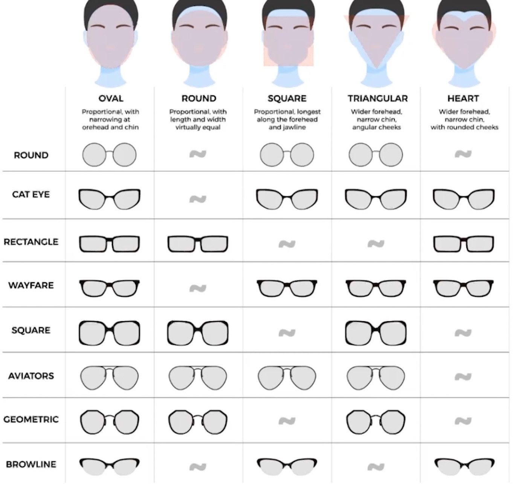

Glow-Up Tips
Body:
Use a sugar scrub:
A sugar scrub is a skin care product used after washing the body to exfoliate the skin, remove dead skin cells, and promote skin renewal. It creates smoother, softer, and brighter skin. It can even help your skin tone look more even. It also helps you absorb moisturizer better.
Take into consideration:
- Most of the dust (90%) in your home is dead skin cells since your whole body is covered with them.
- Using natural scrubs without chemicals is the healthiest alternative for your skin.
- Salt scrubs from the Dead Sea contain minerals that further help the skin.
- Many natural scrubs have anti-bacterial properties that may help with acne.
- Scrubs containing coffee grounds not only exfoliate, the caffeine also helps reduce puffiness and inflammation.
- Over-exfoliating may cause irritation so not only the type of scrub is important but also how it is applied.
- Exfoliating more than 2-3 times per week is not only irritating but may strip skin of natural oils and lead to breakouts.
Face:
- Avoid rubbing your eyes or sleeping on your face, which can damage both your eyebrows and eyelashes.
Acne:
- Don’t try to pop your pimple - Avoid touching or picking at your face.
- Skip home remedies, like toothpaste, hydrogen peroxide, and rubbing alcohol.
- Try to touch your face less.
- Eat better (Diet Here)
Honey:
Honey has intensive hydrating properties, promoting elasticity and firmness. It exfoliates dry skin gently.
Take into consideration:
- Most moisturizers have lots of synthetic chemical products inside them, which surely isn't very healthy. While honey is all-natural.
- Honey contains enzymes that allow moisture to get deep in the skin, bringing much-needed hydration to the deeper layers.
- Leave honey on the face for about 10 minutes.
Jawline:
Exercises:
- Jaw Clenches: Clench your jaw muscles tightly for a few seconds and then release. Repeat this several times a day to strengthen your jawline.
- Neck Resistance: Place your hand on your forehead and push your head against your hand without moving your neck.
- Zygopulling: Take your thumbs and put them in the very edge part of your palate in between your teeth and your cheeks just behind your cheekbones. Then massage upwards and outwards. This is used to loosen up your fascia and get you ready for thumbpulling.
- Chintucking: Stand/Sit up nice and straight against something behind you like a chair or a wall. Push your shoulders out and get your neck straight and have every part of your body touching the wall/chair other than your heels. Your heels should be slightly pushed forward. Now, dont move your neck, just hinge it. Hinge your chin towards your neck and give yourself as many double chins as possible.
- Thumbpulling: Put your hands spread apart with your thumbs sticking out and put your thumbs behind your lateral incisors. Not touching your teeth, just on your palate. Then push up and outwards with your thumbs. Like this:
- THE ULTIMATE: Do Zygopulling and then combine Chintucking and Thumbpulling together. Here's the key when doing Chintucking x Thumbpulling, resist downwards with your chin and at the same time push upwards and outwards with your thumbs. Hold for 30 seconds once every hour of the day if you can. Like this:


Gum:
It's important to take into consideration that even during breaks from chewing, your jaw muscles will still receive some level of stimulation from everyday activities. Therefore, you're unlikely to experience a significant loss of gains during these periods of rest. I suggest having 1-2 month breaks between your chewing periods to ensure the best muscle recovery and ongoing progress.
Mastic Gum:
| Pros | Cons |
|---|---|
| Reusable / Rechewable | Tastes like you're eating leaves and raw grass |
| Potential Health Benefits & No artificial sweeteners or flavors | Most expensive option (typically a couple of dollars extra over the jawline gum) |
| All Natural |
Falim Gum:
| Pros | Cons |
|---|---|
| Cheapest Option | Not as hard as mastic |
| Has decent flavors | |
| All Natural |
Jawliner Gum:
| Pros | Cons |
|---|---|
| Tastes the best | Less hard than mastic, somewhat similar to Falim |
| Similar price to mastic gum while being a lot worse |
Routine:
- Participate in hard chewing gum sessions every other day, dedicating 1 to 2 hours to it each day.
- Consistency is key, so do this routine consistently to see noticeable improvements in your jawline aesthetics and strength.
| Week 1 | Week 2 |
|---|---|
| Monday - Nothing | Monday - Gum |
| Tuesday - Gum | Tuesday - Nothing |
| Wednesday - Nothing | Wednesday - Gum |
| Thursday - Gum | Thursday - Nothing |
| Friday - Nothing | Friday - Gum |
| Saturday - Gum | Saturday - Nothing |
| Sunday - Nothing | Sunday - Gum |
Mouth:
- Rub coconut oil on your lips to hydrate them.
Teeth:
- Use a mouthwash - It gives you fresh breath all day and can whiten your teeth. Also, it prevents gum disease, tooth decay, plaque, and cavities.
- Use whitening strips if your teeth aren't very white.
Breath:
- Clean your tongue. (Using a tongue scraper)
Eyes:
Eyelid Skin:
The skin around your eyelids is delicate and requires special care to maintain its health and appearance.
Hydration:
Keeping your eyelid skin hydrated is very important. Use lightweight, hydrating eye creams that provide moisture without causing puffiness. Look for ingredients like hyaluronic acid and peptides, which can help maintain skin elasticity and smoothness.
Protection:
The skin around the eyes is thinner and more prone to damage from environmental factors. Always apply sun protection around the eye area to prevent UV damage. Consider wearing sunglasses to shield your eyes from harmful rays and prevent squinting.
Anti-Aging Treatments:
To fight signs of aging, consider products that contain retinol or peptides. These ingredients can help reduce fine lines and wrinkles, keeping your eyelid skin looking youthful and vibrant.
Eye Bags:
Under-eye bags are very common and can make you look tired and older.
| Causes: | Solutions: |
|---|---|
| Fluid Retention: Often due to salty foods or dehydration. | Cold Compress: Reduces swelling by constricting blood vessels. |
| Lack of Sleep: Inadequate rest can cause puffiness. | Hydration: Drink plenty of water to reduce fluid retention. |
| Allergies: Can lead to swelling and puffiness. | Caffeine-Infused Eye Creams: Reduce puffiness by constricting blood vessels. |
| Aging: Loss of skin elasticity and fat redistribution. | Lifestyle Changes: Reducing salt intake and managing allergies can help. |
Sunken Eyes:
Sunken eyes is a condition that makes the eyes appear as if they are set back in the eye socket. It creates a hollowed appearance, often making you look tired or unwell.
| Causes: | Solutions: |
|---|---|
| Aging: Loss of fat and collagen in the under-eye area. | Hydration: Drinking water helps to plump up the skin. |
| Dehydration: Lack of moisture can make eyes appear sunken. | Healthy Diet: Ensure you get enough vitamins and minerals. |
| Genetics: Some people naturally have deeper set eyes. | Topical Treatments: Hyaluronic acid serums can help to plump the skin. |
The Sclera:
The sclera, or the white part of your eye, plays a crucial role in the overall appearance of your eyes. Keeping the sclera bright and healthy can increase your eye aesthetics greatly.
Discoloration:
| Causes: | Solutions: |
|---|---|
| Dehydration: Not drinking enough water can cause your sclera to appear dull. | Hydration: Drink plenty of water to keep your eyes hydrated. |
| Lack of Sleep: Sleep deprivation can lead to redness and discoloration. | Proper Sleep: Ensure you get sufficient sleep each night. |
| Health Issues: Conditions like jaundice or anemia can cause yellowing of the sclera. | Eye Drops: Use lubricating eye drops to reduce redness and keep your eyes moist. |
| Environmental Factors: Exposure to pollutants or excessive screen time can also affect scleral health. | Limit Screen Time: Reduce time spent in front of screens and take regular breaks to prevent eye strain. |
Glasses:
Where To Visit:
- Visit local optical stores for personalized service and the ability to try on frames.
- Websites like Warby Parker, Zenni Optical, and GlassesUSA offer a wide range of frames at various price points. Many online retailers offer virtual try-on tools.
- For high-end frames, consider designer boutiques that offer premium brands and custom fittings.
What Kind to Buy:
Eyebrows:
Types of Eyebrows:


Canthal Tilt:
Positive: A slight positive tilt is ideal for men's eyebrows. If your eyebrows lack this, grow them out and reshape them.
Neutral: A neutral tilt isn't a deal-breaker. You can still grow the top area and reshape them.
Negative: This is the worst tilt, often due to a droopy end. Shave the arch and droopy part.
Eyebrow Maintenance:
Shave your eyebrows twice a month to keep them sharp and clean, removing any loose hairs around them. Use a combination of plucking and an eyebrow razor for the best results.
Plucking vs. Eyebrow Razor:
Plucking: Offers precision and longer-lasting results since hairs are removed from the root but can be painful and time-consuming.
Eyebrow Razor: Faster and less painful, good for quick touch-ups, but hair grows back faster and requires more skill for precision.
Hair:
Follow this step-by-step effective shampoo usage method:
- Wet your hair with warm, or cool water (preferably cool).
- Apply a quarter-sized amount of shampoo to your hands.
- Rub your hands together to distribute the shampoo.
- Evenly spread the shampoo across the front, middle, back, and sides of your hair. (And above the hairline on your neck)
- Gently massage your scalp with your fingers in all areas.
- Repeat if your scalp is greasy.
- Rinse the shampoo thoroughly with water.
Shampoo and Conditioner for straight hair:
A modest amount of conditioner is preferred, approximately the same size as a dime or nickel, adjusting based on hair length. Focus on applying the conditioner to the mid-length parts of your hair. Avoid directly applying conditioner to the roots, as this can result in an oily scalp and weigh down your hair. Also, consider your hair's dryness when determining the appropriate amount of conditioner to use. If your hair feels dry or brittle, you may benefit from applying a bit more conditioner to provide additional moisture and nourishment.
Overdoing it: Shampooing daily or more than once every other day.
Frequency: Shampoo every other day or every two to three days.
Coconut Oil:
Benefits: Nourishes and strengthens hair, reducing protein loss and enhancing shaft penetration.
How to Use: Use as a pre-shampoo treatment, massaging onto scalp and hair, leaving for at least 30 minutes before washing.
Scent:
- Eau de toilette = 3-4 hours. Eur de parfum = 6-8 hours.
- Have your scent represent who you are and who you want to be. It should be your "signature scent". (Make it unique)
Diet:
Eat:
- Meat
- Eggs
- Nuts
- Fruits & Vegetables
- Beans
- Bran-Based Grains - Grain Cereal, Whole Wheat, Oats
- Yogurt
- Tea - Due to the antioxidants and vitamins found in many popular herbal teas, tea drinking is a popular route to reducing the rate of acne. Green tea has also been shown to reduce the number of inflammatory lesions on the nose and chin.
- Oil
- Almond Milk
- Apple Cider Vinegar
Don't Eat:
- Pasta
- White Rice
- White Bread
- Bagels
- Sugar
- Soda
- Milk Products
- Chocolate
- Chips
- Cookies
- Fried Foods
- Fast Food
- Whey Protein
- Potatoes
Do's:
- Meditate
- Sleep Well (at least 7 hours)
- Good Diet
- Eat Slower
- Stay Hydrated
Dont's:
- Extreme heat, cold, or noise